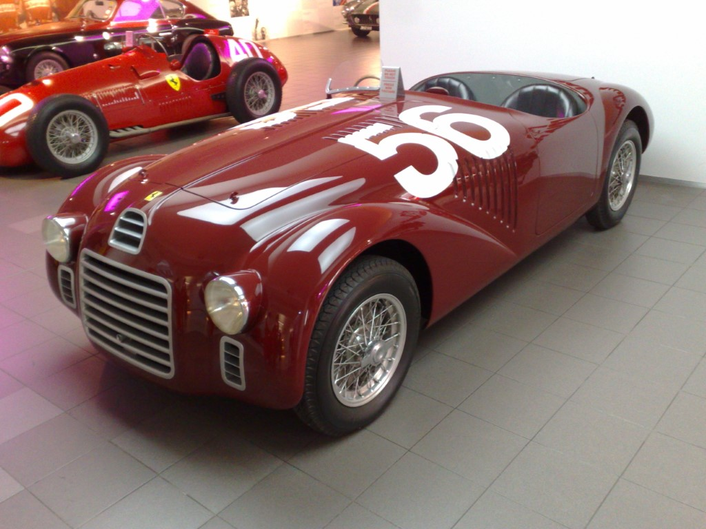
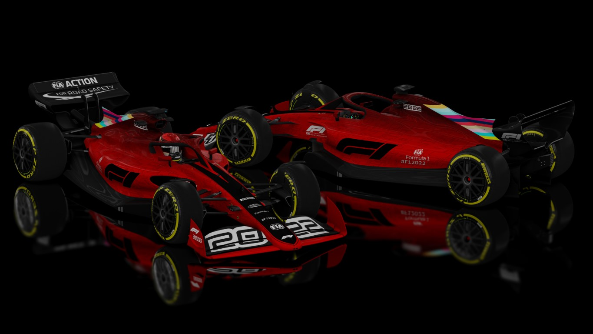

Formula 1
By Ayush Dey

It is also known as the pinnacle of motorsports which makes us witness some of the fastest and most precision built racing machines in the world. First race being held at Great Britain in May 13th, 1950. Since then there has been more than 100 teams that had participated and around 770 drivers from 40 different nationalities that have participated in this sport.

1. The Driver’s Championship, where the driver scoring the highest points wins.
2. The Constructors Championship, where the team scoring the highest points win.
A Formula One season consists of a series of races, known as Grand Prix (French for 'grand prizes' or 'great prizes'), which take place worldwide on purpose-built circuits and closed public roads.
Each race has three divisions -
1. Three practice sessions, namely FP1, FP2 and FP3 which occurs from Friday to Saturday
2. Three qualifying sessions (Q1, Q2, Q3) which occurs on Saturday
3. Main race which occurs on Sunday
The drivers start from the positions they get by setting lap times. The fastest lap time gets to sit at the first position. They start from these positions in the main race and are allotted points on the basis of which position they finish by the last lap.
While Europe is the sport's traditional base, the championship operates globally, with 13 of the 23 races in the 2021 season taking place outside Europe. With the annual cost of running a mid-tier team—designing, building, and maintaining cars, pay, transport—being US$120 million, its financial and political battles are widely reported. Its high profile and popularity have created a major merchandising environment, which has resulted in large investments from sponsors and budgets (in the hundreds of millions for the constructors). On 23 January 2017, Liberty Media confirmed the completion of the acquisition of Delta Topco, the company that controls Formula One, from private-equity firm CVC Capital Partners for $8 billion.